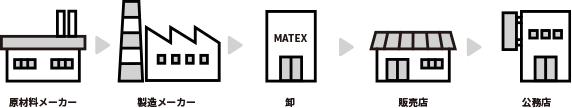
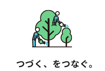
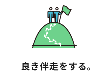
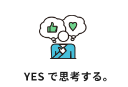
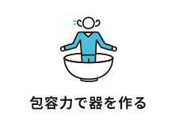
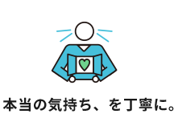

窓から日本を
変えていく
私たちは本気で窓から「日本を変えたい」と考えています。目指すのは、持続可能な暮らしへのシフトと地球環境を取り戻すことです。
人がその一生を健康で活き活きと暮らせること、無駄なエネルギー消費やCO2排出を抑え環境への負荷を軽減すること、地域企業が各々の役割を発揮し「共創共栄」できる未来志向型の社会を目指します。
経営理念
・窓をつうじて社会に貢献する
・「卸の精神」を貫く
・信用を重んじ誠実に行動する
・浮利を追わず堅実を旨とする
・人間尊重を基本とする
昭和3年の創業から培ってきた文化、時代や環境が変わっても大切にすべき考え方や価値観を、創業80年を機に5つの「経営理念」として明文化しました。
窓をつうじて
社会に貢献する
私たちが扱う「窓」。それは雨風をしのぎ、光を採り入れるための役割にとどまらず、脱炭素社会、健康増進、減災を実現しうるソリューションであると確信しています。社会課題解決のカギを握る「窓」を提案し、広めていくことで社会に貢献したいと考えています。
「卸の精神」
を貫く
私たちは、「卸にできること」にこだわり、中でも地域企業のサポートに力を注いでいます。それは業界をひとにぎりの大企業が占めるよりも、たくさんの地域企業がそれぞれの地域に根付いた健全な活動をすることこそが、持続可能な社会をつくると信じているからです。

コア・パーパス
（存在意義）
地域企業と共創し、生活者の豊かな住まいづくりのソリューション（解決策）をお届けする
卸売りの立場から、直接のお客様はもちろん、その先にいる生活者（最終消費者）、さらには社会に何が求められているのかを考え続けます。
コア・バリュー
（価値観・文化）
コア・バリューとは「根っこの価値観」。人が日々生きるうえで、判断を下したり、優先順位を定めたりするうえで「ものさし」になるものを指します。自然発生的にできる「社風」との大きな違いは、意識的、戦略的に自分たちで創り上げていくという点です。





コア・バリューとは「根っこの価値観」。人が日々生きるうえで、判断を下したり、優先順位を定めたりするうえで「ものさし」になるものを指します。自然発生的にできる「社風」との大きな違いは、意識的、戦略的に自分たちで創り上げていくという点です。
コア・バリュー
経営への想い
私たちは2013年に皆で考え、皆で創ることを軸にするべく10のコア・バリューを制定しました。制定にあたっては、社員皆で「これまでの良い文化」「今後こうしたい文化」を出し合い、まとめました。
会社のコア・バリューを明確に定めることで、働くメンバーそれぞれが意思決定や判断を下しやすくなります。コア・バリュー経営はサービス品質の向上をはじめ、働きがいにつながるものと信じています。
美点視をもつ
コア・バリューの1つ「美点視をもつ。」はマテックスの代表的な文化です。人の良いところを見つけて称賛することや、感謝の表現を大切にする場面を意識的に増やしていくために「MVA（マテックスバリューアクション）」という社内SNSを活用しています。コア・バリューを体現している仲間にSNSで称賛のレターを送ることで、「うれしい」のはもちろん、「良い行動」に対する価値観を全社で共有することができます。
歴史
1928年（昭和3年）
松本義雄が松本硝子店を創業
寡黙で経営理念を自から語るタイプではありませんでしたが、「人を信頼する」「泣き言は言わない」を哲学としていたと、仕事を共にした仲間達に語られています。
1949年（昭和24年）
株式会社松本商店を設立
1969年（昭和44年）
松本巌が代表取締役社長に就任
1996年（平成8年）
3社合併によりマテックス株式会社発足
株式会社マツモトアバンテ、東京フレンド建硝株式会社、株式会社アトム、3社合併にてマテックスが誕生。社名の由来はそれぞれの会社の頭文字のアルファベットより。1998年には卸売りとして顧客ニーズに付加価値をつけてお応えすべく、ペアガラスの製造事業を開始しました。
2009年（平成21年）
創業80年。松本浩志が代表取締役社長に就任
新経営理念を明文化。あらためて本業である窓の卸事業が、社会課題解決のポテンシャルをもっていることを発信。2009年、環境省登録の地球温暖化対策地域協議会「エコ窓普及促進会」を設立。活動を評価いただき2010年には「市民が選ぶCSR大賞」、2012年には「低炭素杯2012」を受賞しました。
2013年（平成25年）
コア・バリューを制定
窓リフォーム分野の開拓と地域企業支援の取り組みを評価いただき、2015年に「先進的なリフォーム事業者表彰」を受賞。2019年には、高性能窓の普及を促進すべく樹脂窓の製造事業を開始しました。
2019年（令和1年）
コア・バリューをリニューアル
コア・バリューを親しみやすいようシンプルに変更。評価とも連動することで、よりよい文化づくりを促進しました。また8年後の100周年を見据え、ＣＩ（コーポレートアイデンティティー）を新たに。社名の持つ意味をMarvelous（素晴らしく）,Attractive（魅力的な） Experience.（体験）と定義づけました。